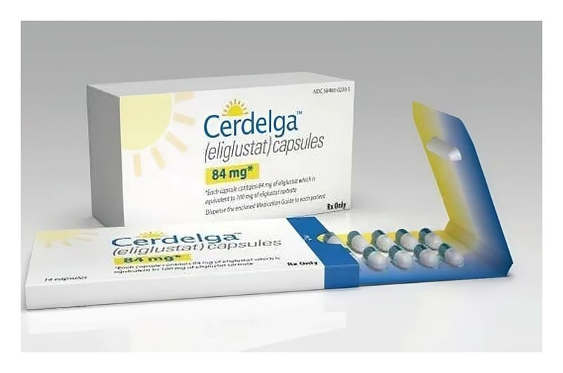

Cerdelga 84 mg Sert Kapsül, 56 Adet

Ne için kullanılır
KT · Bölüm 1• CERDELGA, kapsül gövdesinde siyah “GZ02” baskısı olan inci beyaz opak gövde ve inci mavi-yeşil opak kapaklı sert kapsüldür. Her bir blisteri 14 kapsül içeren, 56 kapsüllük blister cüzdan ambalajlarda mevcuttur. • CERDELGA, eliglustat (tartarat olarak) etkin maddesini içerir. Her bir kapsül 84,4 mg eliglustat içerir.
• CERDELGA, Tip 1 Gaucher hastalığı olan yetişkin hastalarda uzun süreli tedavide kullanılan bir ilaçtır. • Tip-1 Gaucher hastalığı, glukosilseramid denilen bir maddenin vücut tarafından etkin şekilde yıkılamadığı, nadir görülen, kalıtımsal bir hastalıktır. Bunun sonucunda glukosilseramid dalak, karaciğer ve kemiklerde birikir. Bu birikim, bu organların doğru veya düzgün çalışmasına engel olur. CERDELGA’nın etkin maddesi olan eliglustat, glukosilseramid üretimini azaltarak birikimini önler. Bu da etkilenen organlarınızın daha iyi çalışmasını sağlar. • Vücudun bu ilacı yıkma hızı kişiden kişiye farklılık gösterir. Bunun sonucunda, bu ilacın kandaki miktarı hastalar arasında farklılık göstermekte olup, hastanın nasıl tepki vereceğini etkiler. CERDELGA, bu ilacı vücudunda normal hızda yıkan hastalarda (orta metabolizör ve hızlı metabolizör olarak bilinir) veya yavaş yıkan (yavaş metabolizör olarak bilinir) hastalarda kullanım içindir. CERDELGA’yı kullanmaya başlamadan önce doktorunuz, basit bir laboratuvar testi yaparak CERDELGA’nın size uygun olup olmadığına karar verecektir. • Tip-1 Gaucher hastalığı yaşam boyu süren bir durumdur ve ilaçtan maksimum fayda sağlamak için doktorunuzun reçete ettiği şekilde kullanmaya devam etmeniz gerekmektedir.